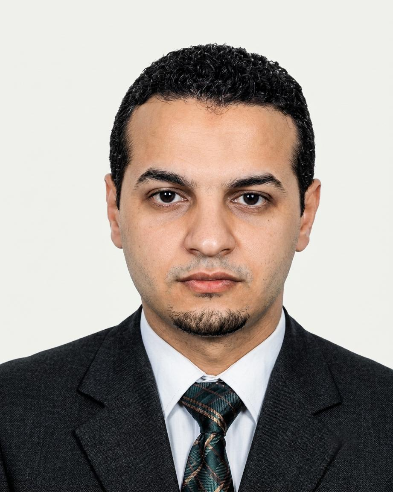

كلية الحقوق والعلوم السياسية
قسم العلوم السياسية
الموسم الجامعي: 2025 - 2026

بن جيلالي محمد الأمين
الهاتف: +213 676 82 53 99
البريد: amine.bendjilali@yahoo.fr
اسم المقياس: تاريخ الفكر السياسي
الفئة المستهدفة: السنة الأولى (جذع مشترك علوم سياسية)
الهيكلة: الرصيد: 06 | المعامل: 03
• الإلمام التام بمبادئ العلوم السياسية الأساسية.
• ثقافة عامة واسعة حول تاريخ الحضارات الكبرى.
- توظيف الأدوات المنهجية (من، متى، أين) لقراءة وتفكيك فكر أي فيلسوف سياسي.
- التمييز المنهجي الدقيق بين مفهوم "الفكر" ومفهوم "الفلسفة" من منظور سياسي.
- تحديد وتحليل السمات الأربع الكبرى للفكر السياسي (العقلانية، الشمولية، اللازمنية، المعيارية).
المحور الأول: الفكر السياسي: تحديدات منهجية
الهدف العام للمحور: تزويد الطالب بالأدوات المفاهيمية والمنهجية الضرورية لفهم تاريخ الفكر السياسي، والتمييز بين مستويات التفكير والنظرية السياسية.
| رقم الوحدة | المحور الفرعي (حسب الفهرس) | الأهداف البيداغوجية الإجرائية | طريقة العرض والوسيط الرقمي | الأنشطة والتقييم التكويني | المدة |
|---|---|---|---|---|---|
| 1.1 | أولاً: التوظيف الميتودولوجي لحياة المفكر السياسي | أن يطبق الطالب الاستفهامات الخمسة (من؟ متى؟ المنزع؟ المؤلفات؟ المنعطفات؟) للوصول لفهم عميق لسيرة المفكر. | إنفوجرافيك تفاعلي: يعرض خريطة ذهنية للاستفهامات الخمسة مع مثال توضيحي لمارتن لوثر والتمييز بينه وبين كينغ. | منتدى نقاش: اختر مفكراً سياسياً وقم بتفكيك سيرته بناءً على الأسئلة المنهجية الخمسة. | 45 دقيقة |
| 1.2 | ثانياً: من هو المفكر السياسي Le Penseur Politique؟ | أن يحدد الطالب المؤشرات الثلاثة لبلوغ مستوى الفكر (الرؤية، المنهج، والجهاز المفاهيمي). | فيديو تعليمي قصير: يشرح الفرق المنهجي بين "الفكر" كخطاب شخصي و"الفلسفة" كخطاب موجه للخدمة الإنسانية. | كويز Quiz: أسئلة حول ركائز "الرؤية" و"المنهج" في استهداف موضوع الدراسة بدقة. | 30 دقيقة |
| 1.3 | ثالثاً: السمات العامة للفكر السياسي | أن يحلل الطالب الخصائص الأربع للفكر (العقلانية، الشمولية، اللازمنية، المعيارية) ويوظف استعارة "العربة" لأفلاطون. | نص تفاعلي + بودكاست: شرح مفهوم "عقلنة القوة" واستعارة الحصانين (القوة الغضبية والشهوانية) تحت قيادة العقل. | عصف ذهني: لماذا يعتبر العقل (قائد العربة) أداة ضرورية لتوجيه قوة الدولة نحو الصالح العام? | 60 دقيقة |
| 1.4 | رابعاً: الفكر السياسي: الموضوع والمنهج واستراتيجيات التفكير | أن يميز الطالب بين العرض التاريخي البحت والعرض التاريخي الفلسفي، ويطبق استراتيجية "التحدي والاستجابة". | عرض تقديمي (Slides): يوضح منهج التحليل والمقارنة واستراتيجيات الرد والرد المضاد بين الحجج السياسية. | واجب منزلي: لخص في فقرة كيف يمثل فكر هوبز أو أفلاطون استجابة لـ "اضطراب" في العالم الفعلي. | 45 دقيقة |
المحور الثاني: بدء السياسة في الفكر الشرقي القديم
الهدف العام للمحور: أن يستوعب الطالب طبيعة الفكر السياسي الروحي في الشرق القديم، ويحلل أسس السلطة والفضيلة في الفلسفة الكونفوشيوسية كنموذج للحكمة العملية.
| رقم الوحدة | المحور الفرعي (حسب الفهرس) | الأهداف البيداغوجية الإجرائية | طريقة العرض والوسيط الرقمي | الأنشطة والتقييم التكويني | المدة |
|---|---|---|---|---|---|
| 2.1 | أولاً: حول إمكانية وجود تفكير سياسي في الشرق | أن يحدد الطالب السمات الأربع للفكر الشرقي (روحي، ثابت، ميتافيزيقي، غير تجزيئي) ويفهم سياق نشأته. | إنفوجرافيك: يوضح خصائص الفكر الشرقي وتداخله مع الدين والأساطير مقابل الفكر البرهاني. | عصف ذهني: لماذا لم يتبلور الفكر السياسي في الحضارات القديمة كنسق فلسفي مستقل؟ | 45 دقيقة |
| 2.2 | ثانياً: شهادة الغرب بوجود حكمة عملية شرقية | أن يحلل الطالب إشادة فلاسفة الغرب (أفلاطون، فرنسوا شاتليه) بالنظم السياسية الشرقية (مصر، دولة موسى). | فيديو تعليمي: يتناول شهادة شاتليه حول "دولة الصحراء الموسوية" كنموذج أول للسلطة المنظمة. | كويز: أسئلة حول اعتراف اليونان بسبق الأنظمة الشرقية في الإدارة والتحليل السياسي. | 30 دقيقة |
| 2.3 | ثالثاً: سؤال السياسة الفاضلة عند كونفوشيوس | أن يستوعب الطالب مفهوم "تفويض السماء" وارتباطه بحكمة الحاكم, وحق الشعب في عزل الحاكم المستبد. | نص تفاعلي: يشرح تاريخ أسرة "تشو" وانتقال الصين من العصر الذهبي إلى عصر المؤامرات والعنف. | منتدى نقاش: ناقش مفهوم "تفويض السماء" كأداة شرعية لمواجهة الطغيان والفساد. | 60 دقيقة |
| 2.4 | رابعاً: مناقشة مبادئ الفكر السياسي الكونفوشوسي | أن يحلل الطالب ركائز الدولة المستقرة (الثقة، العدالة، الحكم بالفضيلة) والتمييز بين الإقناع والإكراه. | بودكاست صوتي: يتناول فلسفة "الاقتداء" ومبدأ الوسط الذهبي عند كونفوشيوس. | واجب منزلي: لخص في فقرة شروط الحاكم الحكيم وعلاقة ذلك بمصالح الرعية. | 45 دقيقة |
| 2.5 | خامساً: ما بعد الكونفوشيوسية أو الكونفوشيوسية الجديدة | أن يدرك الطالب الربط بين السياسة والميتافيزيقا، ودور "الرقابة العلوية" في الحفاظ على استقرار المدينة. | مخطط مفاهيمي: يوضح كيف تصبح "السماء" في الاعتقاد الصيني أداة للثورة الشعبية ضد الطغيان. | سؤال تقييمي: كيف يحول "التفويض السماوي" الحكم من سلطة مطلقة إلى مسؤولية شعبية؟ | 45 دقيقة |
المحور الثالث: الاستشكال السياسي في الفكر الإغريقي (التنظير لدولة المدينة)
الهدف العام للمحور: تتبع تطور الفكر السياسي اليوناني من الممارسة القبلية والملكية إلى قمة التنظير الفلسفي مع سقراط وأفلاطون وأرسطو، وفهم كيفية بناء نموذج "دولة المدينة".
| رقم الوحدة | المحور الفرعي (حسب الفهرس الأصلي) | الأهداف البيداغوجية الإجرائية | طريقة العرض والوسيط الرقمي | الأنشطة والتقييم التكويني | المدة |
|---|---|---|---|---|---|
| 3.1 | تحولات نظام الحكم والحياة السياسية في ظل البدايات الإغريقية | أن يحلل الطالب انتقال السلطة من الملكية الأبوية (نظام هوميروس) إلى الأوليغارشية ثم الديمقراطية الأثينية. | خريطة زمنية تفاعلية: توضح مراحل تطور الدستور اليوناني من عهد سولون إلى كاليستينن. | كويز: أسئلة حول خصائص الملكية البطركية والفرق بينها وبين حكم الطغاة. | 45 دقيقة |
| 3.2 | سقراط والديمقراطية (محاكمة الدفاع: Apology) | أن يشرح الطالب نقد سقراط للديمقراطية القائمة على المساواة العددية، ويحلل تهم "إفساد الشباب" و"إنكار الآلهة". | بودكاست درامي: مقتطفات من "محاورة الدفاع" تبرز الصراع بين العقل والسلطة السياسية. | منتدى نقاش: هل تعتبر محاكمة سقراط دفاعاً عن استقرار المجتمع أم قمعاً للفكر النقدي؟ | 60 دقيقة |
| 3.3 | أفلاطون واستئناف القول في السياسة | أن يربط الطالب بين تقسيم النفس (عاقلة، غضبية، شهوانية) وطبقات المدينة، ويشرح نظرية "الحاكم الفيلسوف". | إنفوجرافيك: يوضح الهيكل الطبقي للجمهورية والبرنامج التربوي لإعداد النخبة السياسية. | واجب منزلي: لخص في فقرة مفهوم العدالة عند أفلاطون بوصفها "تأدية كل طبقة لوظيفتها". | 60 دقيقة |
| 3.4 | أرسطو وبراكسيس السياسة | أن يميز الطالب بين العلم النظري والعملي (Praxis)، ويحلل نشأة الدولة ككائن عضوي ينمو من الأسرة إلى المدينة. | فيديو شارح: يعرض مفهوم "الإنسان حيوان سياسي" وأهمية سيادة القانون لتحقيق الاكتفاء الذاتي. | سؤال عصف ذهني: لماذا اعتبر أرسطو أن الدولة تسبق الفرد من حيث الغاية والكمال؟ | 60 دقيقة |
المحور الرابع: التوجهات الجديدة للفكر السياسي بعد دولة المدينة
الهدف العام للمحور: أن يستوعب الطالب التحول الجوهري في الفكر السياسي الهلنستي، حيث انتقل التركيز من "أفضل نظام سياسي للمدينة" إلى "سعادة الفرد الشخصية" وظهور مفاهيم المواطنة العالمية.
| رقم الوحدة | المحور الفرعي (حسب الفهرس) | الأهداف البيداغوجية الإجرائية | طريقة العرض والوسيط الرقمي | الأنشطة والتقييم التكويني | المدة |
|---|---|---|---|---|---|
| 4.1 | أولاً: الأبيقوريون (Epicureans) | أن يشرح الطالب مبدأ "السعادة الفردية" كغاية مطلقة، ويفهم العدالة كـ "اتفاقية" مصلحية لتجنب الألم. | فيديو شارح قصير: يعرض فلسفة أبيقور حول الدولة كوسيلة أمنية وليست غاية معنوية. | كويز: أسئلة حول طبيعة "العدالة الاتفاقية" والفرق بينها وبين العدالة المطلقة عند أفلاطون. | 45 دقيقة |
| 4.2 | ثانياً: السينيكيون (Cynics) | أن يحلل الطالب فكرة "المواطنة العالمية" (Cosmopolis) والمساواة الكاملة بين البشر بعيداً عن فوارق الطبقة. | إنفوجرافيك مقارنة: يوضح رفض السينيكيين لـ "دولة المدينة" ودعوتهم للانتماء للعالم ككل. | عصف ذهني: لماذا طالب السينيكيون بإلغاء الفوارق الاجتماعية المصطنعة؟ | 45 دقيقة |
| 4.3 | ثالثاً: الرواقيون (Stoics) | أن يستوعب الطالب مفهوم "القانون الطبيعي" ودوره في تبرير الإمبراطورية كوحدة سياسية تضم شعوباً مختلفة. | بودكاست تعليمي: يتناول دعوة الإسكندر المقدوني للتآخي بين الشعوب وتأثيرها على الفكر الرواقي. | واجب منزلي: لخص في فقرة كيف مهدت الرواقية الطريق للفقه القانوني الروماني عبر "القانون الطبيعي". | 60 دقيقة |
المحور الخامس: الفكر السياسي الروماني
الهدف العام للمحور: أن يحلل الطالب انتقال الفكر السياسي من "دولة المدينة" إلى "الإمبراطورية العالمية"، ويفهم مساهمة الرومان في تطوير الفكر القانوني ومفاهيم المواطنة والواجب العام.
| رقم الوحدة | المحور الفرعي (حسب الفهرس) | الأهداف البيداغوجية الإجرائية | طريقة العرض والوسيط الرقمي | الأنشطة والتقييم التكويني | المدة |
|---|---|---|---|---|---|
| 5.1 | أولاً: خصائص الفكر السياسي الروماني | أن يحدد الطالب سمات العقلية الرومانية (الروح العسكرية، التضحية) ويفهم نشأة "قانون الشعوب" كحل عملي لإدارة التنوع. | إنفوجرافيك: يوضح تطور القانون الروماني من أعراف دينية ضيقة إلى "قانون الشعوب" العالمي. | سؤال عصف ذهني: كيف ساهم التوسع الروماني في تحويل القانون من طقس ديني إلى أداة مدنية عالمية؟ | 45 دقيقة |
| 5.2 | ثانياً: بوليبيوس (Polybius) | أن يحلل الطالب أسباب تفوق روما من منظور "عقلاني"، ويفهم دور "الدستور المختلط" في استقرار الدولة الإمبريالية. | فيديو شارح: يتناول إعجاب بوليبيوس بانضباط الجيش الروماني ونظامه السياسي الذي يمنع الاستبداد. | كويز: أسئلة حول الفرق بين "النجاح بسبب الحظ" و"النجاح بسبب الفطنة السياسية" عند بوليبيوس. | 45 دقيقة |
| 5.3 | ثالثاً: شيشرون (Cicero) | أن يستوعب الطالب الربط بين القانون والأخلاق، ويدرك نقد شيشرون للأبيقوريين بضرورة المشاركة السياسية المستمرة. | نص تفاعلي: يعرض مقتطفات من كتاب "الجمهورية" لشيشرون حول القانون الطبيعي والخدمة العامة. | منتدى نقاش: ناقش حجة شيشرون: "لماذا يجب على الفرد المشاركة في السياسة بشكل مستمر وليس فقط وقت الضرورة؟". | 60 دقيقة |
| 5.4 | رابعاً: سينيكا (Seneca) | أن يميز الطالب بين "المجتمع العاقل العالمي" و"الدولة السياسية"، ويفهم فكرة "العصر الذهبي" قبل ظهور الملكية الخاصة. | بودكاست تعليمي: يشرح نظرية سينيكا حول انحراف الطبيعة البشرية وضرورة المؤسسات القانونية كعلاج للفساد. | واجب منزلي: لخص في فقرة مفهوم "الجمهوريتين" عند سينيكا وعلاقة ذلك بالقانون الطبيعي. | 60 دقيقة |
المحور السادس: الفكر السياسي المسيحي
الهدف العام للمحور: أن يستوعب الطالب ثنائية السلطة في الفكر القروسطي، ويميز بين المنهج الأكويني التوفيقي والمنهج الأوغسطيني الذي يركز على "مدينة الرب" وعجز العقل البشري أمام الخطيئة.
| رقم الوحدة | المحور الفرعي (حسب الفهرس) | الأهداف البيداغوجية الإجرائية | طريقة العرض والوسيط الرقمي | الأنشطة والتقييم التكويني | المدة |
|---|---|---|---|---|---|
| 6.1 | أولاً: مدخل تمهيدي للفكر السياسي المسيحي | أن يحدد الطالب سمات الفكر المسيحي (الفصل بين السلطة الزمنية والروحية) ومبدأ طاعة الأنظمة القائمة. | إنفوجرافيك: يوضح شعار "ما لقيصر لقيصر وما لله لله" وتوزيع الولاء بين الكنيسة والإمبراطور. | منتدى نقاش: كيف ساهمت المسيحية في خلق "ازدواجية السلطة" مقارنة بوحدتها في دولة المدينة اليونانية؟ | 45 دقيقة |
| 6.2 | ثانياً: القديس توما الأكويني وإعادة بناء مفهوم العدالة | أن يحلل الطالب محاولة الأكويني للتوفيق بين الأرسطية والثيولوجيا، ويصنف رتب القانون الأربع. | فيديو تعليمي: يشرح كتاب "الخلاصة اللاهوتية" وكيف أعاد الأكويني بعث فكرة "الإنسان حيوان سياسي". | كويز Quiz: أسئلة حول رتب القانون (الأزلي، الطبيعي، الإلهي، الإنساني) والعلاقة بين العقل والإيمان. | 60 دقيقة |
| 6.3 | الهندسة الاجتماعية للمجتمع القروسطي عند الأكويني | أن يميز الطالب بين طبقات المجتمع الإقطاعي (الملك، البارونات، الأقنان) ودور العقل في الصالح العام. | مخطط هرمي تفاعلي: يعرض تركيبة المجتمع المسيحي القروسطي القائم على الريع والخدمة العسكرية. | عصف ذهني: لماذا اعتبر الأكويني أن الدولة مؤسسة طبيعية تهدف لتحقيق الصالح العام عبر العقل؟ | 45 دقيقة |
| 6.4 | ثالثاً: مدخل إلى القديس سان أوغستين | أن يحلل الطالب نظرية "الجمهوريتين" (مدينة الرب ومدينة الأرض) ويربطها بمفهوم الخطيئة الأولى. | بودكاست صوتي: يتناول كتاب "مدينة الرب" والرد على اتهامات الوثنيين للمسيحية بعد سقوط روما. | واجب منزلي: لخص في فقرة مقولة أوغستين "آمن كي تعقل" وعلاقة ذلك بمحدودية العقل الإنساني. | 60 دقيقة |
المحور السابع: التأصيل الإسلامي للسياسة
الهدف العام للمحور: أن يحلل الطالب أسس الدولة في الإسلام انطلاقاً من "وثيقة المدينة"، ويفهم جذور الصراع السياسي حول الخلافة، ويستوعب نظرية "العمران والعصبية" عند ابن خلدون كأول تفسير سوسيولوجي للدولة.
| رقم الوحدة | المحور الفرعي (حسب الفهرس) | الأهداف البيداغوجية الإجرائية | طريقة العرض والوسيط الرقمي | الأنشطة والتقييم التكويني | المدة |
|---|---|---|---|---|---|
| 7.1 | أولاً: المدينة النموذجية في عهد دولة محمد صلى الله عليه وسلم | أن يحلل الطالب "وثيقة الصحيفة" كدستور مدني أسس لـ "الأمة" ككيان سياسي يتجاوز الروابط القبلية. | نص تفاعلي + إنفوجرافيك: عرض بنود "الصحيفة" التي نظمت العلاقة بين المسلمين واليهود وسائر سكان المدينة. | منتدى نقاش: كيف ساهمت الصحيفة في الانتقال من "الفرد القبلي" إلى "المواطن" في جماعة سياسية واحدة؟ | 60 دقيقة |
| 7.2 | ثانياً: الفرق الإسلامية وسؤال الخلافة | أن يميز الطالب بين مواقف (السنة، الشيعة، الخوارج) حول شرعية الخليفة وطرق اختياره (البيعة مقابل النص). | مخطط مقارنة (Table): يبرز الفوارق المنهجية بين "الخلافة" كمنصب دنيوي-ديني و"الإمامة" كوراثة دينية. | كويز Quiz: أسئلة حول مفهوم "البيعة" وشروط الخليفة عند مختلف المذاهب الإسلامية. | 60 دقيقة |
| 7.3 | ثالثاً: الفكر السياسي الخلدوني (العمران والوازع) | أن يشرح الطالب ضرورة "الوازع السياسي" (الدولة) لمنع العدوان الطبيعي المجبول عليه البشر. | فيديو تعليمي: يشرح تأثر ابن خلدون بأرسطو في فكرة "الإنسان مدني بالطبع" وحاجة البشر للتعاون. | سؤال عصف ذهني: لماذا يعتبر ابن خلدون "الوازع" (السلطة) ضرورة مادية لبقاء النوع البشري？ | 45 دقيقة |
| 7.4 | نظرية العصبية ودورة حياة الدولة | أن يطبق الطالب مفهوم "العصبية" على مراحل نشأة الدول، ويفهم قانون الأجيال الثلاثة (البداوة، الملك، الترف). | مخطط بياني تفاعلي: يمثل منحنى "صعود وهبوط" الدول عند ابن خلدون وارتباطها بالترف وفناء العصبية. | واجب منزلي: لخص في فقرة كيف تتحول العصبية من "رئاسة" في البدو إلى "ملك وقهر" في الحضر. | 60 دقيقة |
المحور الثامن: الإصلاحات الدينية في أوروبا
الهدف العام للمحور: أن يحلل الطالب أثر الحركة البروتستانتية في تحرير الدولة من هيمنة الكنيسة الكاثوليكية، ويفهم العلاقة بين الإيمان الفردي والسلطة الزمنية عند لوثر وكالفن.
| رقم الوحدة | المحور الفرعي (حسب الفهرس) | الأهداف البيداغوجية الإجرائية | طريقة العرض والوسيط الرقمي | الأنشطة والتقييم التكويني | المدة |
|---|---|---|---|---|---|
| 8.1 | أولاً: مارتن لوثر وعقيدة التبرير بالإيمان | أن يشرح الطالب مبدأ "المسؤولية الفردية عن الإيمان" وكيف ألغى لوثر الوساطة الكنسية بين العبد والرب. | فيديو تعليمي: يتناول سيرة لوثر وتعليقه للاحتجاجات الـ 95 على باب الكنيسة في "وتنبرج". | كويز Quiz: أسئلة حول مفهوم "الحرية الروحانية" عند لوثر ورفضه لصكوك الغفران. | 45 دقيقة |
| 8.2 | اللاهوت السياسي عند لوثر (الحكومتان) | أن يميز الطالب بين "الحكومة الروحية" و"الحكومة الدنيوية"، ويفهم مبررات طاعة السلطة المدنية. | إنفوجرافيك: يوضح تقسيم لوثر للسلطة (الإنجيل للكنيسة، والسيف والقانون المدني للدولة). | منتدى نقاش: لماذا دعم لوثر الأنظمة الملكية في مواجهة سلطة البابا？ | 60 دقيقة |
| 8.3 | ثانياً: جان كالفن ومبدأ الفصل بين الكنيسة والدولة | أن يحلل الطالب رؤية كالفن التي تفصل بين المؤسستين (الكنيسة والدولة) مع إبقائهما خاضعتين لسيادة الله. | نص تفاعلي: يشرح الفرق بين "الدين" و"الكنيسة" في فكر كالفن وكيف تخدم الدولة مهمة التبشير. | سؤال عصف ذهني: كيف تؤدي الدولة وظيفة "روحية" عند كالفن عبر الحفاظ على الهدوء المحلي؟ | 45 دقيقة |
| 8.4 | الثيوقراطية والمسؤولية المدنية عند كالفن | أن يستوعب الطالب مفهوم "المواطن النموذجي" الذي تنتجه الكنيسة ليكون ركيزة للدولة المستقرة. | بودكاست صوتي: يتناول تجربة كالفن في "جنيف" وكيف تحول المجتمع إلى قوة أخلاقية موحدة. | واجب منزلي: لخص في فقرة كيف مهدت الإصلاحات الدينية الطريق لنشوء الدولة القومية المستقلة. | 60 دقيقة |
المحور التاسع: الفكر السياسي في عصر النهضة
الهدف العام للمحور: أن يحلل الطالب الانتقال من المرجعية الدينية إلى الواقعية السياسية (الميكيافيلية)، ويستوعب الأسس القانونية للدولة الحديثة عبر نظرية "السيادة" عند جان بودان.
| رقم الوحدة | المحور الفرعي (حسب الفهرس الأصلي) | الأهداف البيداغوجية الإجرائية | طريقة العرض والوسيط الرقمي | الأنشطة والتقييم التكويني | المدة |
|---|---|---|---|---|---|
| 9.1 | أولاً: الفكر السياسي عند نيقولا ميكيافيلي (عصر النهضة) | أن يربط الطالب بين روح الإنسانية في عصر النهضة والتحول نحو الثقة بالذات والإبداع الإنساني بعيداً عن زهد العصور الوسطى. | فيديو شارح قصير: يعرض حال إيطاليا المجزأة في القرن الخامس عشر وحلم ميكيافيلي بتوحيدها. | عصف ذهني: لماذا يعتبر ميكيافيلي "النهضة كلها مختزلة في شخصه"؟ | 45 دقيقة |
| 9.2 | ميكيافيلي: فن الوصول إلى السلطة والحفاظ عليها | أن يميز الطالب بين أطروحة "الأمير" (الحكم الاستبدادي للضرورة) و"الخطابات" (تفضيل الحكم الجمهوري والفضيلة المدنية). | نص تفاعلي: مقارنة بين رؤية ميكيافيلي المتشائمة للطبيعة البشرية (الأنانية) وضرورة أن يكون الحاكم "مخوفاً لا محبوباً". | منتدى نقاش: ناقش مفهوم "الغاية تبرر الوسيلة" من منظور ميكيافيلي الأخلاقي والسياسي. | 60 دقيقة |
| 9.3 | ثانياً: جان بودان ونظرية السيادة (التسامح الديني) | أن يحلل الطالب موقف بودان من التسامح الديني كضرورة سياسية (وليس مبدأ أخلاقياً) لإنهاء الانقسام القومي في فرنسا. | بودكاست تعليمي: يتناول كتاب "الكتب الست للجمهورية" وسياق مذبحة سان بارتلوميو. | كويز Quiz: أسئلة حول دور "السياسيين" في إعلاء مصلحة الدولة فوق النزاعات الطائفية. | 45 دقيقة |
| 9.4 | مفهوم الدولة السيادية وخصائصها عند بودان | أن يحدد الطالب خصائص السيادة (غير قابلة للتجزئة، دائمة، ومطلقة) ويميز بينها وبين السلطات المؤقتة. | إنفوجرافيك: يوضح هرمية السلطة وحدود السيادة المطلقة (القانون الإلهي، الطبيعي، والملكية الخاصة). | واجب منزلي: لخص في فقرة كيف مهد بودان لمفهوم "الدولة الأمة" في الفكر السياسي الحديث. | 60 دقيقة |
المحور العاشر: الفكر السياسي الحديث
الهدف العام للمحور: أن يحلل الطالب أسس الحداثة السياسية القائمة على العقل والحرية، ويقارن بين نماذج العقد الاجتماعي، ويستوعب نقد المجتمع الرأسمالي من منظور ماركسي.
| رقم الوحدة | المحور الفرعي (حسب الفهرس الأصلي) | الأهداف البيداغوجية الإجرائية | طريقة العرض والوسيط الرقمي | الأنشطة والتقييم التكويني | المدة |
|---|---|---|---|---|---|
| 10.1 | أولاً: الدولة والمجتمع المدني عند هيجل | أن يميز الطالب بين "المجتمع المدني" كساحة للمصالح الخاصة، و"الدولة" كتحقق فعلي للحرية والأخلاق الشاملة. | فيديو تعليمي: يشرح جدلية الروح عند هيجل وكيف تعلو الدولة أخلاقياً على المجتمع المدني. | عصف ذهني: لماذا اعتبر هيجل أن الحرية الحقيقية لا توجد إلا داخل الإطار القانوني للدولة؟ | 60 دقيقة |
| 10.2 | ثانياً: فلاسفة العقد الاجتماعي (هوبز، لوك، روسو) | أن يقارن الطالب بين دوافع التعاقد (الخوف عند هوبز، حماية الملكية عند لوك، والحرية عند روسو). | مخطط مقارنة تفاعلي: يوضح الفرق بين "حالة الطبيعة" وشكل السلطة الناتج عن العقد في كل نموذج. | منتدى نقاش: أيهما أقرب للواقع السياسي المعاصر: نموذج لوك الليبرالي أم نموذج روسو في الإرادة العامة؟ | 90 دقيقة |
| 10.3 | ثالثاً: كارل ماركس والفكر السياسي | أن يحلل الطالب البنية التحتية (الاقتصاد) وأثرها في صياغة البنية الفوقية (الدولة والقانون)، ويفهم مفهوم الصراع الطبقي. | إنفوجرافيك: يمثل العلاقة بين وسائل الإنتاج وعلاقات الإنتاج وكيف تولد "فائض القيمة". | كويز Quiz: أسئلة حول مفهوم "الوعي الزائف" ودور الدولة كأداة في يد الطبقة المسيطرة اقتصادياً. | 60 دقيقة |
المحور الحادي عشر: الفكر السياسي المعاصر
الهدف العام للمحور: أن يحلل الطالب تعقيدات العالم السياسي المعاصر، ويقارن بين نظريات العدالة والحرية في الفكر الغربي، ويستوعب الاتجاهات الكبرى للفكر العربي (الإصلاحية، القومية، النقدية، والإسلام السياسي).
| رقم الوحدة | المحور الفرعي (حسب الفهرس الأصلي) | الأهداف البيداغوجية الإجرائية | طريقة العرض والوسيط الرقمي | الأنشطة والتقييم التكويني | المدة |
|---|---|---|---|---|---|
| 11.1 | أولاً: الفكر السياسي الغربي المعاصر (أعلام وقضايا) | أن يحدد الطالب ركائز الفكر المعاصر (شميت، أرندت، راولز) ويفهم مفاهيم التعددية والعدالة كإنصاف. | فيديو تعليمي: عرض مقارن بين مفهوم "السياسي" عند شميت والحرية عند حنا أرندت والعدالة عند راولز. | منتدى نقاش: ناقش مفهوم "العدالة كإنصاف" عند جون راولز وكيفية تطبيقه في المجتمعات التعددية. | 60 دقيقة |
| 11.2 | ثانياً: الفكر السياسي العربي المعاصر (الإصلاح والتحديث) | أن يتتبع الطالب جذور النهضة العربية من رفاعة الطهطاوي إلى محمد عبده ومحاولات التوفيق بين الحداثة والإسلام. | إنفوجرافيك: يمثل التيارات الأربعة الكبرى للفكر العربي (الإصلاحي، القومي، النقدي، والإسلام السياسي). | كويز Quiz: أسئلة حول رؤية الطهطاوي للمؤسسات الفرنسية ودور محمد عبده في الإصلاح الديني. | 45 دقيقة |
| 11.3 | ثانياً (تابع): الفكر العربي النقدي والإسلام السياسي | أن يحلل الطالب الفكر النقدي (العروي، الجابري) وأطروحات الإسلام السياسي (المودودي، قطب) كاستجابة لإخفاقات التحديث. | نص تفاعلي: مقارنة بين المنهج التاريخاني لعبد الله العروي وأطروحة "الإسلام هو الحل" في مواجهة الحداثة. | سؤال عصف ذهني: لماذا برز التيار النقدي العربي بقوة بعد هزيمة 1967 وفشل تجارب الوحدة؟ | 60 دقيقة |
| 11.4 | خاتمة: آفاق الفكر السياسي في القرن الحادي والعشرين | أن يستشرف الطالب القضايا المستجدة (الهوية، الجندر، البيئة، الهجرة) ودور المفكر في "الهوامش". | بودكاست ختامي: يتناول أهمية الانفتاح على المفكرين المعاصرين الجدد وربط التراث بالأسئلة الراهنة. | واجب منزلي: اكتب ملخصاً ختامياً حول أهمية دراسة تاريخ الفكر السياسي في فهم تعقيدات الواقع الراهن. | 45 دقيقة |
خاتمة المقياس: آفاق الفكر السياسي في القرن الحادي والعشرين
إن دراسة تاريخ الفكر السياسي لم تعد تقتصر على تتبع تطور النظريات الكلاسيكية، بل أصبحت خارجية بالانفتاح على القضايا الجديدة التي فرضتها التحولات المعاصرة. يهدف هذا المقياس إلى توجيه البحث نحو الهوامش لاستكشاف تجارب الفئات المستبعدة وفهم الإشكالات الوجودية والسياسية التي تشغل الإنسان المعاصر.
تشمل هذه الآفاق مواضيع الهوية، وقضايا الجندر، والهجرة، والعدالة البيئية، والكرامة الإنسانية. كما يستوجب التكوين الرصين الانفتاح على إسهامات مفكرين معاصرين أمثال وائل حلاق في فلسفة القانون والدولة، وعلي المزروعي في تحليل العلاقات بين الشمال والجنوب، وفريد بوشيه في أخلاقيات الهشاشة، مما يسمح بربط التراث الفكري بالأسئلة السياسية الراهنة.
قائمة المصادر والمراجع المختارة
- بن جيلالي، محمد أمين: مطبوعة بيداغوجية في مقياس تاريخ الفكر السياسي، جامعة تلمسان.
- سباين، جورج: تطور الفكر السياسي، الهيئة المصرية العامة للكتاب.
- أفلاطون: محاورة الدفاع والجمهورية (ترجمة عزت القرني).
- المحمداوي، علي عبود: الفلسفة السياسية: كشف لما هو كائن.
- شتراوس، ليو: تاريخ الفلسفة السياسية (ترجمة محمود سيد أحمد).
- ابن خلدون: المقدمة.
- حلاق، وائل ب.: الدولة المستحيلة: الإسلام والسياسة ومأزق الحداثة الأخلاقي.
- Wolin, Sheldon S.: Politics and Vision.
قسم العلوم السياسية - كلية الحقوق والعلوم السياسية - جامعة تلمسان
© 2025 - 2026 جميع الحقوق محفوظة
هذا المحتوى الرقمي مستخلص من المطبوعة البيداغوجية المعتمدة للأستاذ: الدكتور محمد أمين بن جيلالي
قسم العلوم السياسية | كلية الحقوق والعلوم السياسية | جامعة أبي بكر بلقايد – تلمسان
يُمنع إعادة نشر أو نسخ هذا السيناريو البيداغوجي لأغراض تجارية دون إذن مسبق من صاحب الحقوق الفكرية.